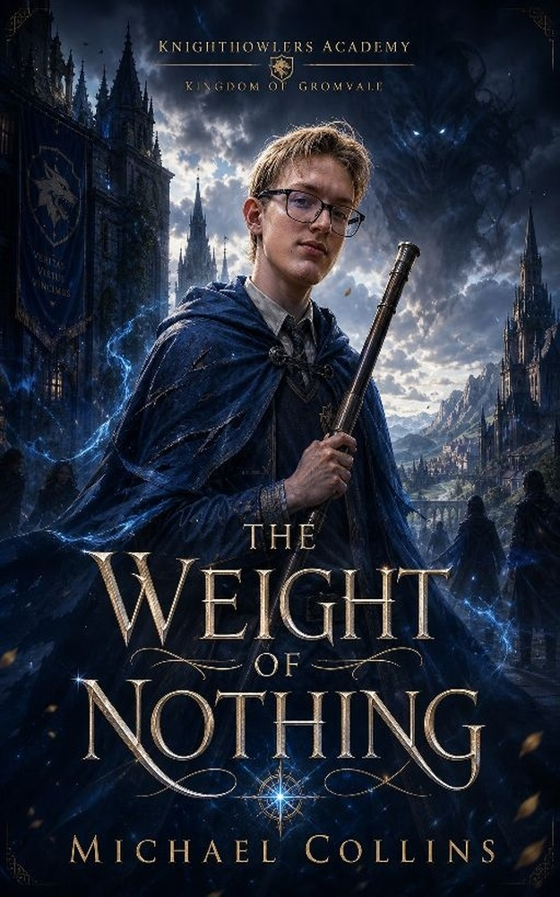

Some powers are inherited. Some are earned.
His was never supposed to exist.

In a world where magic determines your worth, seventeen-year-old Kai Farden is a public impossibility: a Tier Zero admitted to the kingdom’s most powerful academy.
But Kai has spent years hiding what he can truly do. As rival kingdoms gather, old barriers weaken, and an ancient emptiness presses against the edges of reality, staying invisible may cost more than being seen.
“Having something worth fighting for is the only true freedom.”
The opening of Chapter One, free to read right here. If it hooks you, the rest is waiting.
Nobody believed in me. That was their first mistake.
The thought came unbidden, the way it always did, somewhere between the burn in my shoulders and the cold bite of stone beneath my palms. I held it for a moment the way I held my body — inverted, suspended, deliberate — and then I let it pass through me like wind through the arches of the west wing.
Three in the morning. The world below KnightHowlers Academy slept with the heavy, dreamless certainty of people who had never questioned whether tomorrow would come. I envied them sometimes. Most times I just trained.
My hands walked the ledge.
Left. Right. Left. Right. Each placement precise, each finger spread wide to distribute weight across the narrow stone lip that bordered the west wing rooftop. Four stories below, the courtyard waited with the patient indifference of gravity. I’d made this walk six hundred and forty-three times. I knew because I counted. Counting kept the mind sharp when the body wanted to quit, and the body always wanted to quit before the mind was finished.
The wind picked up from the north, carrying the iron-tinged smell of the forge district and something else beneath it — something I’d started noticing in the last few weeks. A staleness. A wrongness in the air, like bread left too long in a cellar. I didn’t know what it was yet. I filed it away the way I filed everything away: silently, carefully, in the architecture of a mind that had learned early that knowledge was the only currency that couldn’t be stolen.
Forty feet to go.
My shoulders screamed. Good. Pain was information. Pain meant the muscles were tearing at the microscopic level and rebuilding themselves stronger, and stronger was the only direction I was willing to go.
The book wasn’t in my room. It wasn’t anywhere anyone could find it. It was folded away in a place that didn’t exist on any map, pressed between pages that had never been written, and every night I took it out and read the same passage until the words stopped being words and started being something else. Something I could hold.
Thirty feet.
A gust slammed into me from the east, unexpected, sharp enough to make my left wrist buckle. My body tilted toward the courtyard, toward four stories of patient gravity, and for half a heartbeat I was falling.
It slowed.
Not faster. Slower. Most people’s hearts raced when death reached for them. Mine had learned a different rhythm. The air pressed its cold mouth against my skin, everything inside me went quiet and still, like the surface of a lake before dawn. I had been terrified of that stillness once. Now I lived inside it.
I corrected. Shifted weight to my right palm. Stabilized. Continued.
Twenty feet. Fifteen. Ten.
I reached the end of the ledge and folded my body forward, letting my legs arc over my head in a controlled descent until my feet found the flat stone of the rooftop. I stood there for a moment, blood rushing from my head back down to where it belonged, and let the night settle around me like a second skin.
The Tidevault Chronicles unfolds across the Five Kingdoms — and each new book pulls deeper beneath the surface.
Kai Farden walks into KnightHowlers Academy with no magic and no standing — and a secret that could remake everything. Read it in paperback or Kindle on Amazon.
Get it on AmazonSome promises outlive the people who made them. When old debts surface beneath the tide, Kai will learn the past was never finished asking.
Coming next in the Chronicles.
Magic is status, currency, and destiny. Beyond the lantern-lit halls of the academies, something ancient is learning how to cross over.
In Gromvale, magic decides everything. Kai Farden has none — or so everyone believes.
A fold between worlds where water can hide what reality was never meant to hold.
Once a year, every soul must speak a truth painful enough to keep the darkness out.
The throne & the Silver League
Soldiers forged by necessity
Power is the measure of worth
A kingdom built by makers
Healing, restraint, and old wisdom
Quiet, relentless, and classified as powerless. The truth in his hands could remake the kingdoms — or open the door to the Hollow.
A craftsman with unprecedented fire and a gift for building what should not be possible. His promise is simple: “I’ll be here.”
A brilliant strategist raised among the powerful. She sees through every defense Kai has built — and chooses honesty anyway.
Paperback & Kindle available now on Amazon